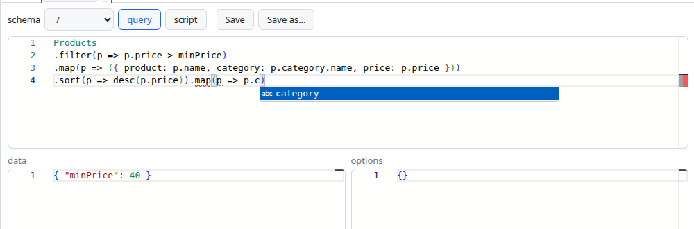
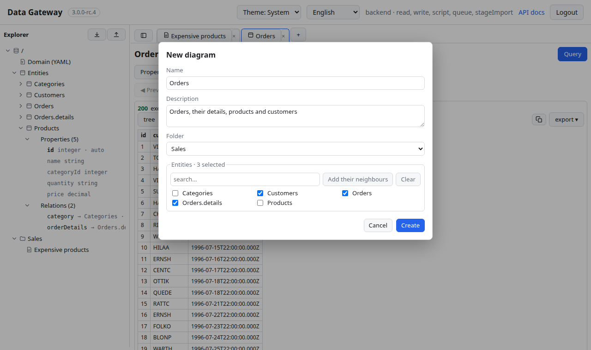

Getting started¶
This guide goes from an empty folder to the northwind database published by a Data Gateway: its REST API, its web UI, MCP for an AI agent and its WebSocket API. It takes about ten minutes and needs only Docker (with Docker Compose).

1. The files¶
Create a folder with this layout (the files can be downloaded from this wiki):
northwind/
├── docker-compose.yml ← PostgreSQL and the Data Gateway
├── data-gateway.config.yaml ← how the gateway exposes the schema and who can use it
├── data.json ← the rows of northwind, to import
└── workspace/
└── lambdaORM.yaml ← the λORM schema: domain, mapping, source, stage
mkdir -p northwind/workspace && cd northwind
W=https://lambda-orm.github.io/wiki/data-gateway/northwind
curl -sO $W/docker-compose.yml
curl -sO $W/data-gateway.config.yaml
curl -sO $W/data.json
curl -s $W/lambdaORM.yaml -o workspace/lambdaORM.yaml
The schema: workspace/lambdaORM.yaml¶
A normal λORM schema: the domain (entities, properties, relations), the
mapping to the tables, one source (PostgreSQL) and the stage default. An excerpt:
domain:
entities:
- name: Products
primaryKey: ["id"]
uniqueKey: ["name", "supplierId"]
properties:
- { name: id, type: integer, required: true, autoIncrement: true }
- { name: name, required: true }
- { name: categoryId, type: integer }
- { name: price, type: decimal, default: 0 }
relations:
- { name: category, from: categoryId, entity: Categories, to: id, target: products }
# … Categories, Customers, Orders, Orders.details
infrastructure:
mappings:
- name: default
entities:
- name: Products
mapping: Products
properties:
- { name: id, mapping: ProductID }
- { name: name, mapping: ProductName }
# …
sources:
- name: Northwind
dialect: PostgreSQL
mapping: default
connection: ${NORTHWIND_DB} # an environment variable: the gateway gives it to this schema
stages:
- name: default
sources:
- name: Northwind
The gateway: data-gateway.config.yaml¶
orm:
workspacePath: /workspace # the folder with lambdaORM.yaml (a single schema: served at the root)
schemas:
- path: "" # that schema: it receives only the variables given here
env: { NORTHWIND_DB: $NORTHWIND_DB }
authentication:
adapter: local
type: apikey
header: X-Api-Key
keys:
- { name: reader, value: $READER_KEY, permissions: [ read ] }
- { name: backend, value: $BACKEND_KEY, permissions: [ read, write, script, queue, stageImport ] }
scripts:
enabled: true
transports:
http:
port: 8080
ui: { enabled: true }
mcpHttp:
port: 8081
webSocket:
port: 8083
- Two credentials:
readercan only read;backendcan also write, run scripts, queue and import. - Three transports: REST and the UI on 8080, MCP on 8081, WebSocket on 8083.
- The variables of the schema: each schema receives only its own variables, for its safety;
envgives it the connection.
docker-compose.yml¶
services:
postgres:
image: postgres:16-alpine
environment:
POSTGRES_USER: northwind
POSTGRES_PASSWORD: northwind
POSTGRES_DB: northwind
healthcheck:
test: [ "CMD", "pg_isready", "-U", "northwind" ]
interval: 2s
retries: 30
data-gateway:
image: flaviorita/data-gateway:3.0.0-rc.4
depends_on:
postgres: { condition: service_healthy }
environment:
NORTHWIND_DB: '{"host":"postgres","port":5432,"user":"northwind","password":"northwind","database":"northwind"}'
READER_KEY: ${READER_KEY:-reader-demo-key}
BACKEND_KEY: ${BACKEND_KEY:-backend-demo-key}
volumes:
- ./data-gateway.config.yaml:/config/data-gateway.config.yaml:ro
- ./workspace:/workspace
ports:
- "${HTTP_PORT:-8080}:8080"
- "${MCP_PORT:-8081}:8081"
- "${WS_PORT:-8083}:8083"
The keys reader-demo-key and backend-demo-key are for this example only: in any real use, give READER_KEY and
BACKEND_KEY long random values (openssl rand -hex 24).
2. Start it¶
The schema is ready: it is served at the root (/execute, /mcp, …). If it says error, reason tells why (a
database that can't be reached, a variable not given); the gateway keeps retrying.
3. Create the tables¶
The image includes the λORM CLI. push creates the tables of the stage from the schema:
4. Import the data, through the REST API¶
The import needs the stageImport permission, so reader can't:
curl -X POST http://localhost:8080/stages/default/import -H "X-Api-Key: reader-demo-key" \
-H "Content-Type: application/json" -d @data.json
{ "error": "ForbiddenError", "message": "the credential \"reader\" does not have the \"stageImport\" permission" }
and backend can (it answers 204, and the import leaves an audit line in the log):
curl -X POST http://localhost:8080/stages/default/import -H "X-Api-Key: backend-demo-key" \
-H "Content-Type: application/json" -d @data.json
docker compose logs data-gateway | grep '"type":"audit"'
{"type":"audit","time":"2026-11-18T14:07:39.720Z","schema":"","transport":"http","credential":"backend","operation":"stageImport","stage":"default","durationMs":189,"result":"ok"}
5. Query¶
curl -X POST "http://localhost:8080/execute?format=beautiful" -H "X-Api-Key: reader-demo-key" \
-H "Content-Type: application/json" -d '{
"query": "Products.filter(p => p.price > minPrice).map(p => ({ name: p.name, category: p.category.name, price: p.price })).sort(p => desc(p.price)).page(1, 3)",
"data": { "minPrice": 50 }
}'
[
{ "name": "Côte de Blaye", "category": "Beverages", "price": 263.5 },
{ "name": "Thüringer Rostbratwurst", "category": "Meat/Poultry", "price": 123.79 },
{ "name": "Mishi Kobe Niku", "category": "Meat/Poultry", "price": 97 }
]
p.category.name follows the relation: λORM joins Categories. plan shows how, without running it:
curl -X POST "http://localhost:8080/plan?format=beautiful" -H "X-Api-Key: reader-demo-key" -H "Content-Type: application/json" \
-d '{"query": "Products.filter(p => p.price > minPrice).map(p => ({ name: p.name, category: p.category.name, price: p.price })).sort(p => desc(p.price)).page(1, 3)"}'
{
"entity": "Products",
"dialect": "PostgreSQL",
"source": "Northwind",
"sentence": "SELECT p.ProductName AS \"name\", c.CategoryName AS \"category\", p.UnitPrice AS \"price\" FROM Products p INNER JOIN Categories c ON c.CategoryID = p.CategoryID WHERE p.UnitPrice > $1 ORDER BY p.UnitPrice desc OFFSET 0 LIMIT 3 "
}
6. Write, and the permissions¶
A query that writes, with reader:
curl -X POST http://localhost:8080/execute -H "X-Api-Key: reader-demo-key" -H "Content-Type: application/json" \
-d '{"query": "Products.update(p => ({ price: price })).filter(p => p.id == id)", "data": {"id": 38, "price": 270}}'
{ "error": "ForbiddenError", "message": "the credential \"reader\" does not have the \"write\" permission" }
The gateway refused it before reaching the database, because the query is not a select. With backend it
answers the rows updated, 1, and leaves an audit line.
7. A script: several queries in one transaction¶
curl -X POST "http://localhost:8080/script?format=beautiful" -H "X-Api-Key: backend-demo-key" -H "Content-Type: application/json" -d '{
"script": "orders = orm.execute(\"Orders.filter(p => p.customerId == customerId).map(p => p.id)\", { customerId: customerId }); { customer: customerId, orders: orders.length() }",
"data": { "customerId": "ALFKI" }
}'
A script chooses the status of the answer with throw { status, message }: a customer not found with
status: 404 answers 404. See Script.
8. The API documentation¶
http://localhost:8080/doc/ is the Swagger UI of the REST API. Authorize asks for the API key in the
X-Api-Key header; then every method can be tried from the page.


9. The UI¶
Open http://localhost:8080/ui/:

Login with the API key (the Show button shows what was typed):

On the left, the explorer: the schema, its domain, its entities with their properties and relations. Choose the
schema /, write a query (the editor completes the entities and properties as you type), its data, and execute
(Ctrl+Enter). The result can be seen as a table, tree, JSON or YAML, copied and exported:


Save it with Ctrl+S: a name, a description and a folder (folders are created with the + of the schema):

A double click on an entity (or its Open button) shows its form: properties, relations, keys and indexes, its rows and its diagram.


A diagram: the + of a folder → New diagram, choose Orders and Add their neighbours:

The boxes are laid out by themselves; they and the lines can be dragged, and Save keeps them where they were left:

Everything is explained in UI.
10. An AI agent, through MCP¶
With Claude Code:
claude mcp add --transport http northwind http://localhost:8081/mcp --header "X-Api-Key: reader-demo-key"
Then ask it, for example, "how many products does each category have?". The agent sees the tools the reader
credential can use (orm_execute, orm_plan, schema_domain, …; not the ones that write), with the domain of
northwind in their descriptions, and answers with a query like:
{ "name": "orm_execute", "arguments": { "query": "Categories.map(p => ({ category: p.name, products: count(p.products.id) }))" } }
With reader, the agent cannot change anything, whatever it is asked. See MCP.
11. WebSocket¶
One connection for every operation, with notifications. With @lambdaorm/client:
import { orm } from '@lambdaorm/client'
await orm.init('ws://localhost:8083/', { headers: { 'X-Api-Key': 'reader-demo-key' } })
const customers = await orm.execute('Customers.filter(p => p.country == country).map(p => p.name)', { country: 'Argentina' })
// [ { name: 'Cactus Comidas para llevar' }, { name: 'Océano Atlántico Ltda.' }, { name: 'Rancho grande' } ]
await orm.end()
or the JSON-RPC messages themselves:
→ { "jsonrpc": "2.0", "id": 1, "method": "query.execute", "params": { "query": "Customers.filter(p => p.country == country).map(p => p.name)", "data": { "country": "Argentina" } } }
← { "jsonrpc": "2.0", "id": 1, "result": [ { "name": "Cactus Comidas para llevar" }, { "name": "Océano Atlántico Ltda." }, { "name": "Rancho grande" } ] }
See WebSocket API.
12. Stop it¶
Next steps¶
- Several schemas, one route each, and the environment of each: Configuration.
- Credentials per schema or per transport, the audit, the limits: Security.
- Every REST method: REST API. Production: Operations.